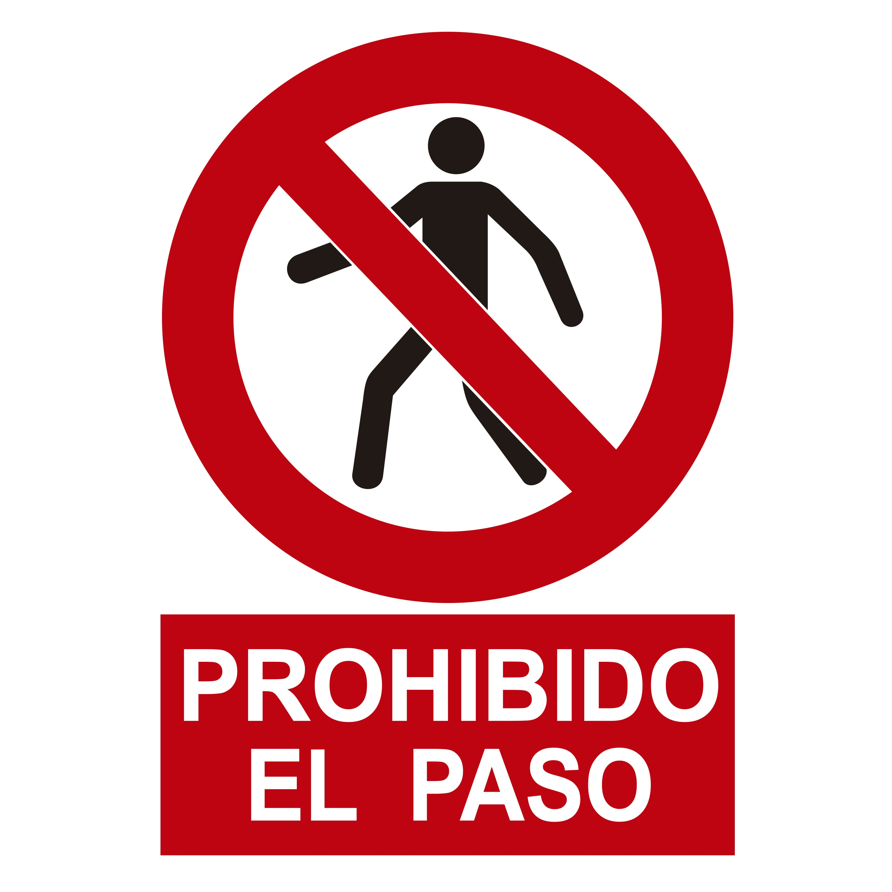
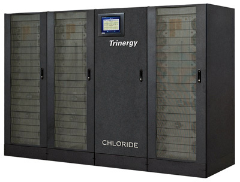

Las normas de seguridad física y ambiental establecen las normas para evitar los accesos no autorizados, daños e interferencias en el sistema de información de la organización.
Estas normas deberán permitir el ingreso a las zonas restringidas solamente a las personas autorizadas y establecer las condiciones ambientales necesarias para que los elementos del sistema informático funcionen correctamente.
El objetivo principal de la seguridad física es proteger el sistema informático, para ello, las normas establecidas se dirigen a protegerlos de los siguientes agentes:
- Personal no autorizado.
- Agua.
- Fuego.
- Temperatura.
- Suciedad.
- Fallos en el suministro eléctrico.
Las medidas que se adoptan para proteger al sistema informático del personal no autorizado, el agua, la temperatura o la suciedad implican escoger una ubicación adecuada de los equipos informáticos, se busca el mejor emplazamiento para que las condiciones sean óptimas:
- Para la construcción de los edificios y las salas que contengan los equipos.
- Para poder luchar contra catástrofes naturales como incendios, inundaciones o terremotos.
- Para la temperatura, humedad y calidad del aire.
En cuanto a la protección contra los fallos de suministro eléctrico, todas las medidas van dirigidas al empleo de sistemas de alimentación ininterrumpida (SAI).
Los SAI varían en tamaño y prestaciones, pueden ser como el que se muestra en la figura, empleados para garantizar la electricidad en un centro de datos o del tamaño de una caja de zapatos, empleados en los equipos de los usuarios convencionales.
La diferencia entre unos y otros estará en parámetros como la autonomía y la potencia que son capaces de suministrar.